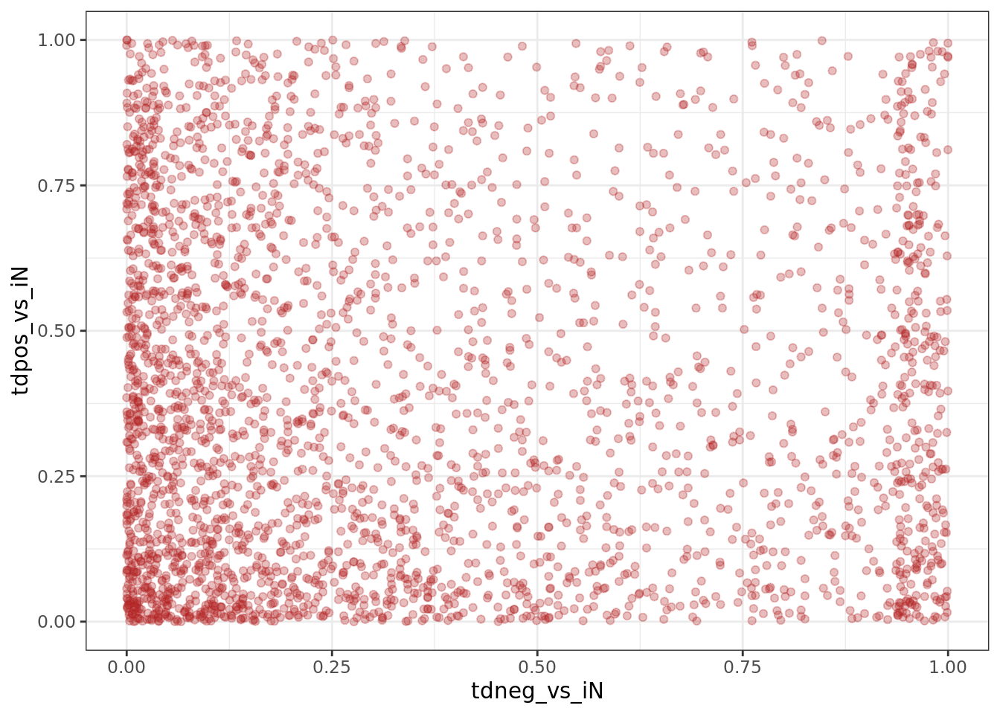

MAGeCK results
knitr::opts_chunk$set(include = T, warning = F, message = F)
library(tidyverse)
library(data.table)
library(EnhancedVolcano)
theme_set(theme_bw())
cnts = fread("../../resources/crispr/counts/wrangled_raw_counts.tsv")RRA
Run RRA in 3 contrasts:
- Day14_Tdneg-vs-Day14_iN
- Day14_Tdneg-vs-Day14_Tdpos
- Day14_Tdpos-vs-Day14_iN
Day14_Tdneg-vs-Day14_iN - look for neuron differentiation activators
For Tdtomato - vs. iN, we look for enriched genes with guides that are lost. TFs with significant reduction in sgRNA reads in the tdTomato- cells indicate that these TFs can potentially positively regulate neuron differentiation.
# read in data
tdneg.vs.iN = fread("../../results/crispr/mageckRRA/Day14_Tdneg-vs-Day14_iN/RRA.gene_summary.txt")tdneg.vs.iN[, .(id, `neg|score`, `neg|lfc`)] %>%
column_to_rownames("id") %>%
EnhancedVolcano(., rownames(.), x = "neg|lfc", y = "neg|score",
title = NULL, subtitle = NULL, caption = NULL,
pCutoff = 1e-3, FCcutoff = 1, max.overlaps = 30,
labSize = 3, legendLabSize = 10, legendIconSize = 3,
ylim = c(0, 6)
) +
theme(axis.title = element_text(size = 10),
axis.text.x = element_text(size = 10), axis.text.y = element_text(size = 10),
legend.position = "None"
)Day14_Tdneg-vs-Day14_Tdpos - look for neuron differentiation activators
For Tdtomato- vs . Tdtomato+ we look for genes with guides that are lost. Similarly to above, TFs with significantly reduced sgRNA reads in the tdTomato- cells vs. tdTomato+ cells may indicate that these TFs can promote neuron differentiation.
# read in data
tdneg.vs.tdpos = fread("../../results/crispr/mageckRRA/Day14_Tdneg-vs-Day14_Tdpos/RRA.gene_summary.txt")tdneg.vs.tdpos[, .(id, `neg|score`, `neg|lfc`)] %>%
column_to_rownames("id") %>%
EnhancedVolcano(., rownames(.), x = "neg|lfc", y = "neg|score",
title = NULL, subtitle = NULL, caption = NULL,
pCutoff = 1e-3, FCcutoff = 1, max.overlaps = 30,
labSize = 3, legendLabSize = 10, legendIconSize = 3,
ylim = c(0, 6)
) +
theme(axis.title = element_text(size = 10),
axis.text.x = element_text(size = 10), axis.text.y = element_text(size = 10),
legend.position = "None"
)Day14_Tdpos-vs-Day14_iN - look for neuron differentiation inhibitors
In Tdtomato+ vs iN contrast, we look for TFs with significantly reduced sgRNA reads. These indicates that the knock out of these TFs promoted neuron differentiation, suggesting that these TFs are likely inhibitors of neuron differentiation.
Why do we also use negative screen in tdTomato+ vs. iN? Because this is a CRISPR-cas9 knockout screen, in theory, we should only observe targeted sgRNA reads to decrease.
# read in data
tdpos.vs.iN = fread("../../results/crispr/mageckRRA/Day14_Tdpos-vs-Day14_iN/RRA.gene_summary.txt")tdpos.vs.iN[, .(id, `neg|score`, `neg|lfc`)] %>%
column_to_rownames("id") %>%
EnhancedVolcano(., rownames(.), x = "neg|lfc", y = "neg|score",
title = NULL, subtitle = NULL, caption = NULL,
pCutoff = 1e-3, FCcutoff = 1, max.overlaps = 30,
labSize = 3, legendLabSize = 10, legendIconSize = 3,
ylim = c(0, 6)
) +
theme(axis.title = element_text(size = 10),
axis.text.x = element_text(size = 10), axis.text.y = element_text(size = 10),
legend.position = "None"
)Compare RRA scores
inner_join(x = tdneg.vs.iN[, .(id, tdneg_vs_iN = `neg|score`)],
y = tdneg.vs.tdpos[, .(id, tdneg_vs_tdpos = `neg|score`)],
by = "id"
) %>%
ggplot() + geom_point(aes(tdneg_vs_iN, tdneg_vs_tdpos), alpha = .3, color = "royalblue")inner_join(x = tdneg.vs.iN[, .(id, tdneg_vs_iN = `neg|score`)],
y = tdpos.vs.iN[, .(id, tdpos_vs_iN = `neg|score`)],
by = "id"
) %>%
ggplot() + geom_point(aes(tdneg_vs_iN, tdpos_vs_iN), alpha = .3, color = "firebrick")
Compare lfc
Comparison of log(fold change) shows that indeed, tdneg_vs_iN and tdneg_vs_tdpos is highly correlated.
inner_join(x = tdneg.vs.iN[, .(id, tdneg_vs_iN = `neg|lfc`)],
y = tdneg.vs.tdpos[, .(id, tdneg_vs_tdpos = `neg|lfc`)],
by = "id"
) %>%
ggplot() + geom_point(aes(tdneg_vs_iN, tdneg_vs_tdpos), alpha = .3, color = "royalblue")inner_join(x = tdneg.vs.iN[, .(id, tdneg_vs_iN = `neg|lfc`)],
y = tdpos.vs.iN[, .(id, tdpos_vs_iN = `neg|lfc`)],
by = "id"
) %>%
ggplot() + geom_point(aes(tdneg_vs_iN, tdpos_vs_iN), alpha = .3, color = "firebrick")
Intersect tdTomato- vs. iN and tdTomato- vs. tdTomato+ top hits
Intersected TFs with neg|score < 1e-3.
intersect(tdneg.vs.iN[`neg|score` < 1e-3, id], tdneg.vs.tdpos[`neg|score` < 1e-3, id])## [1] "AES" "HSFY1"
## [3] "SND1" "SOX11"
## [5] "TP53" "SOX4"
## [7] "CHD7" "ZSCAN23"
## [9] "NCOR2" "CNOT4"
## [11] "NonTargeting_Human_0399" "NonTargeting_Human_0086"
## [13] "MED13" "POU4F2"
## [15] "TGIF2LY" "HMGN5"
## [17] "NonTargeting_Human_0381" "NonTargeting_Human_0287"
## [19] "RBM15" "ARID3A"
## [21] "NonTargeting_Human_0713"Intersects of top 200 TFs
intersect(tdneg.vs.iN[`neg|rank` < 201, id], tdneg.vs.tdpos[`neg|rank` < 201, id])## [1] "AES" "HSFY1"
## [3] "SND1" "SOX11"
## [5] "TP53" "SOX4"
## [7] "CTNNBIP1" "CHD7"
## [9] "ZSCAN23" "NHLH2"
## [11] "NCOR2" "CNOT4"
## [13] "NonTargeting_Human_0399" "PKNOX2"
## [15] "NonTargeting_Human_0086" "MED13"
## [17] "POU4F2" "TGIF2LY"
## [19] "OLIG2" "HMGN5"
## [21] "NonTargeting_Human_0381" "OVOL2"
## [23] "NonTargeting_Human_0287" "HOXC10"
## [25] "RAX" "RBM15"
## [27] "NonTargeting_Human_0829" "KDM5D"
## [29] "TCF4" "TCF3"
## [31] "ARID3A" "NonTargeting_Human_0573"
## [33] "NonTargeting_Human_0713" "NonTargeting_Human_0778"
## [35] "HOXD9" "ZNF626"
## [37] "MNDA" "SUPT7L"
## [39] "NonTargeting_Human_0692" "NonTargeting_Human_0905"
## [41] "NonTargeting_Human_0785" "NonTargeting_Human_0490"
## [43] "FOXH1" "NonTargeting_Human_0586"
## [45] "NonTargeting_Human_0999" "TBPL1"
## [47] "FOXO4" "NonTargeting_Human_0735"
## [49] "NonTargeting_Human_0480" "NKX6-1"
## [51] "NonTargeting_Human_0082" "MEN1"
## [53] "NonTargeting_Human_0531" "DPF1"
## [55] "NonTargeting_Human_0916" "NonTargeting_Human_0010"
## [57] "NHLH1" "SOX21"
## [59] "NonTargeting_Human_0730" "NonTargeting_Human_0279"
## [61] "NonTargeting_Human_0068" "ZNF354C"
## [63] "NonTargeting_Human_0313" "ZNF345"
## [65] "NonTargeting_Human_0128" "NonTargeting_Human_0002"
## [67] "ZNF253" "SOX14"
## [69] "ZNF671" "NonTargeting_Human_0628"
## [71] "SRY" "AIRE"
## [73] "NonTargeting_Human_0149" "NonTargeting_Human_0333"
## [75] "NonTargeting_Human_0904" "ZDHHC7"
## [77] "NonTargeting_Human_0244" "NonTargeting_Human_0857"
## [79] "TWIST2" "RB1"
## [81] "NonTargeting_Human_0407" "ANKRD45"
## [83] "NR2F2" "NFATC3"
## [85] "TCF12" "ZFHX2"
## [87] "NonTargeting_Human_0914" "NonTargeting_Human_0467"
## [89] "EGR2" "NonTargeting_Human_0153"
## [91] "ZNF565" "NonTargeting_Human_0673"
## [93] "MYOG" "NonTargeting_Human_0585"
## [95] "NonTargeting_Human_0626" "NonTargeting_Human_0753"
## [97] "NonTargeting_Human_0548" "ZNF550"
## [99] "NonTargeting_Human_0639" "ZNF483"
## [101] "NonTargeting_Human_0432" "LHX3"
## [103] "ZNF473" "NonTargeting_Human_0537"
## [105] "ZBTB46" "TRIM27"
## [107] "NonTargeting_Human_0369" "ZNF765"
## [109] "NonTargeting_Human_0104" "NonTargeting_Human_0395"
## [111] "NonTargeting_Human_0078" "ZNF611"
## [113] "HMGN4" "NonTargeting_Human_0717"
## [115] "NonTargeting_Human_0666" "NonTargeting_Human_0894"
## [117] "HES1" "HMGB4"
## [119] "NonTargeting_Human_0501" "PTRF"
## [121] "NonTargeting_Human_0787" "NonTargeting_Human_0064"
## [123] "NonTargeting_Human_0387" "ZNF555"
## [125] "RARA" "NonTargeting_Human_0656"
## [127] "NonTargeting_Human_0757" "FBXO7"
## [129] "HIST1H1C" "NonTargeting_Human_0355"
## [131] "SIX6" "NonTargeting_Human_0396"
## [133] "NonTargeting_Human_0553" "FOXC2"
## [135] "NonTargeting_Human_0164" "GATA6"
## [137] "NonTargeting_Human_0049" "NonTargeting_Human_0547"
## [139] "ZNF57" "HEY2"
## [141] "GLI4" "NonTargeting_Human_0603"
## [143] "NonTargeting_Human_0383" "NonTargeting_Human_0574"
## [145] "LMO4"top 200 TFs results above, intersecting with our 120 hits.
hits = fread("../../resources/crispr/Hitlist_20191230.csv")
intersect(tdneg.vs.iN[`neg|rank` < 201, id], tdneg.vs.tdpos[`neg|rank` < 201, id]) %>%
intersect(hits$gene_name)## [1] "HSFY1" "TBPL1" "ZNF671"